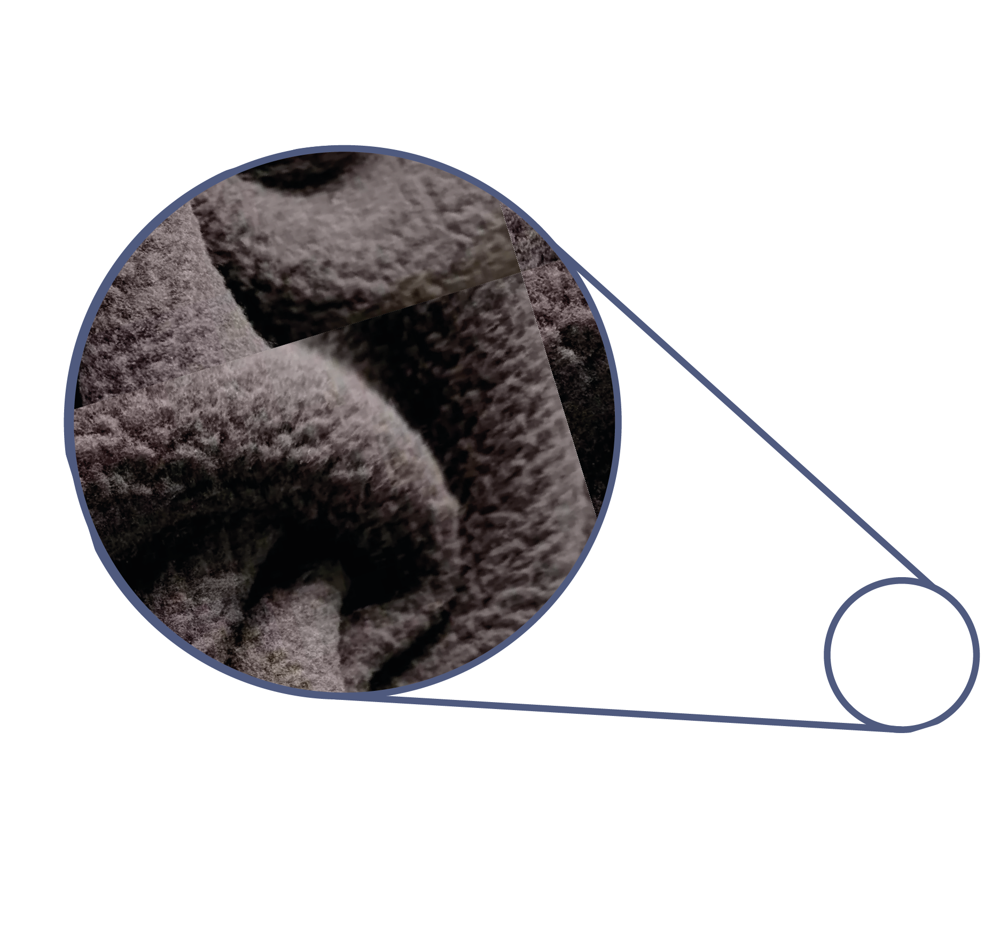

<main id="main" *ngIf="design&&tokenId>0;else wait">
  <section  class="home" *ngIf="isClothing;else notClothing">

    <!--foto of the clothing-->
    <a [routerLink]= "'../../clothingInfo/'+tokenId">  </a>
    <!--info of the design-->
    <a [routerLink]= "'../../design/'+tokenId"></a>
    <!--info of the material-->
    <a [routerLink]= "['../../material/'+tokenId]"></a>
  </section>
</main>

<ng-template #wait>
  wait.......
</ng-template>
<ng-template #notClothing>
  your nft is not clothing
</ng-template>
<script src="scripts/script.js"></script>
